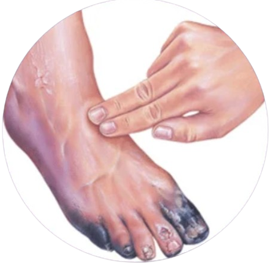

Advanced, personalized treatment for chronic and non-healing wounds at SLVC Clinic, Navi Mumbai
At SLVC Clinic, we take pride in being the foremost destination for non-healing ulcer and wound care in Navi Mumbai.
State-of-the-art wound healing solutions.
Experts from multiple medical disciplines.
Guidance for faster healing.
Understanding Gangrene: Causes, Symptoms, and Treatment Options
Early detection allows timely intervention, helping prevent infection spread, reduce complications, and improve recovery outcomes.

SLVC Clinic specializes in vascular care with advanced diagnostics, expert doctors, and cutting-edge treatments to manage gangrene effectively and preserve limb health.
Take the first step toward healing by scheduling a consultation.
Book Appointment